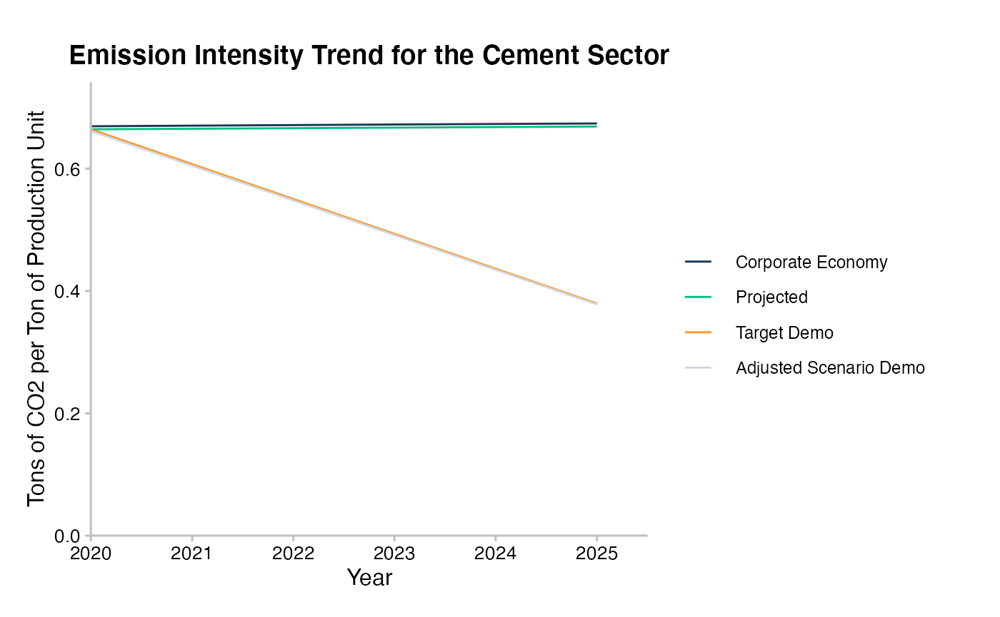
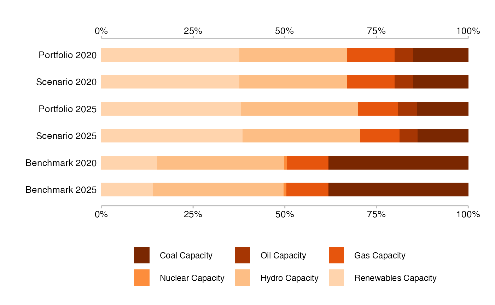

The goal of r2dii.plot is to help you plot 2DII data in an informative, beautiful, and easy way. It is designed to work smoothly with other “r2dii” packages – r2dii.data, r2dii.match, and r2dii.analysis. It also plays well with the ggplot2 package, which helps you customize your plots.
library(ggplot2)
library(r2dii.data)
library(r2dii.match)
library(r2dii.plot)
library(r2dii.analysis)Your data should have a structure similar to that of the demo datasets in the r2dii.data package.
loanbook <- loanbook_demo
ald <- ald_demo
scenario <- co2_intensity_scenario_demo
region <- region_isos_demoYour workflow involves functions from the packages r2dii.match and r2dii.analysis.
matched <- loanbook |>
match_name(ald) |>
prioritize() # Remember to validate matches (see `?prioritize`)- Use
plot_emission_intensity()withsda-like data.
matched |>
target_sda(ald, co2_intensity_scenario = scenario) |>
subset(sector == "cement") |>
plot_emission_intensity()
#> Warning: Removing ald rows where `emission_factor` is NA
#> Removing data before 2020 -- the start year of 'projected'.
#> Warning: Removed 31 row(s) containing missing values (geom_path).
- Use
plot_trajectory()withmarket_share-like data.
matched |>
target_market_share(ald, scenario = scenario_demo_2020, region_isos = region) |>
subset(technology == "renewablescap" & region == "global") |>
plot_trajectory()
#> Removing data before 2020 -- the start year of 'projected'.
#> Normalizing `production` values to 2020 -- the start year.
- Use
plot_techmix()withmarket_share-like data.
matched |>
target_market_share(ald, scenario = scenario_demo_2020, region_isos = region) |>
subset(
sector == "power" &
region == "global" &
year >= 2020 &
year <= 2025 &
metric %in% c("projected", "corporate_economy", "target_sds")
) |>
plot_techmix()